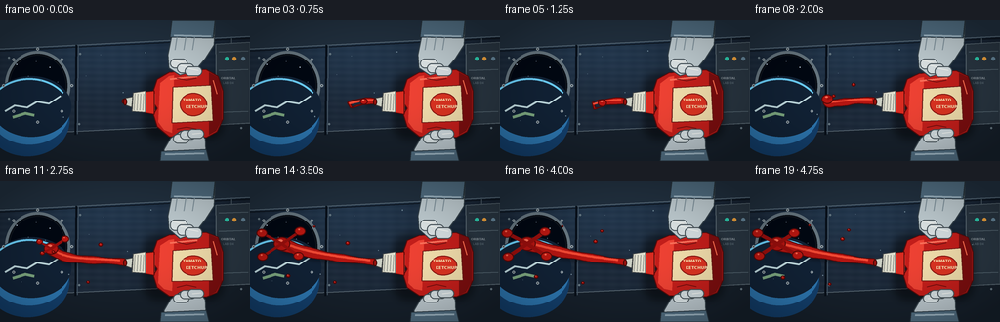
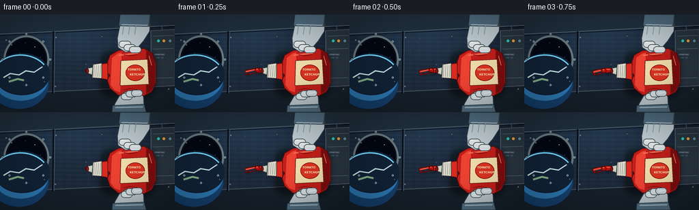

CODING AGENTS AS PIXEL WORLD MODELS
traex/GPT-5.6-Sol · mechanics_0004
点击播放 · 原生 RGB 像素
逐轮保存的候选
回放视频、检查图与代码变化。
每份候选均可单独播放。实际图片检查记录在下方工具轨迹中。
候选 01播放与检查图
点击播放 · 原生 RGB 像素


展开代码变化
--- 上一保存版本
+++ 本次保存版本
@@ -0,0 +1,232 @@
+from pathlib import Path
+import math, json
+import numpy as np
+from PIL import Image, ImageDraw, ImageFont, ImageFilter
+import artifact_io
+
+ROOT = Path(__file__).resolve().parent
+SPEC = json.loads((ROOT/'task_spec.json').read_text())
+W,H,N,FPS = SPEC['width'],SPEC['height'],SPEC['frames'],SPEC['fps']
+S=4
+
+def sc(v): return int(round(v*S))
+def pts(seq): return [(sc(x),sc(y)) for x,y in seq]
+def smooth(x):
+ x=max(0,min(1,x)); return x*x*(3-2*x)
+def bez(p0,p1,p2,p3,u):
+ v=1-u
+ return (v**3*p0[0]+3*v*v*u*p1[0]+3*v*u*u*p2[0]+u**3*p3[0],
+ v**3*p0[1]+3*v*v*u*p1[1]+3*v*u*u*p2[1]+u**3*p3[1])
+def font(sz,bold=False):
+ candidates=['/usr/share/fonts/truetype/dejavu/DejaVuSans-Bold.ttf' if bold else '/usr/share/fonts/truetype/dejavu/DejaVuSans.ttf']
+ for f in candidates:
+ if Path(f).exists(): return ImageFont.truetype(f,sc(sz))
+ return ImageFont.load_default()
+
+def ellipse(d,box,fill,outline=None,width=1): d.ellipse(tuple(sc(v) for v in box),fill=fill,outline=outline,width=sc(width))
+def line(d,xy,fill,width): d.line(pts(xy),fill=fill,width=sc(width),joint='curve')
+def poly(d,xy,fill,outline=None): d.polygon(pts(xy),fill=fill); outline and d.line(pts(xy+[xy[0]]),fill=outline,width=sc(1),joint='curve')
+
+def background(i):
+ # cool metallic station interior with softly moving light
+ yy,xx=np.mgrid[0:H*S,0:W*S]
+ xn=xx/(W*S); yn=yy/(H*S)
+ base=np.zeros((H*S,W*S,3),np.float32)
+ glow=np.exp(-((xn-.42)**2/.20+(yn-.15)**2/.12))
+ base[:,:,0]=16+18*glow+18*yn
+ base[:,:,1]=25+29*glow+23*yn
+ base[:,:,2]=37+39*glow+28*yn
+ # gentle brushed alloy bands
+ bands=2.2*np.sin(yn*140+0.4*np.sin(xn*9))+1.1*np.sin(xn*115)
+ base += bands[:,:,None]
+ im=Image.fromarray(np.uint8(np.clip(base,0,255)),'RGB')
+ d=ImageDraw.Draw(im)
+ # rear wall structural panels
+ poly(d,[(0,0),(256,0),(256,17),(0,30)],(34,49,64))
+ line(d,[(0,29),(256,16)],(97,117,132),1)
+ line(d,[(0,31),(256,18)],(10,17,25),1)
+ poly(d,[(0,117),(256,105),(256,144),(0,144)],(23,33,44))
+ line(d,[(0,117),(256,105)],(93,108,119),1)
+ # panel seams and rivets
+ line(d,[(78,25),(77,117)],(8,16,26),2)
+ line(d,[(80,25),(79,116)],(69,86,101),1)
+ line(d,[(237,18),(239,106)],(75,90,102),1)
+ for x,y in [(82,34),(81,106),(233,29),(236,96),(9,38),(67,112),(247,110)]:
+ ellipse(d,(x-1.1,y-1.1,x+1.1,y+1.1),(123,142,152)); ellipse(d,(x-.35,y-.35,x+.35,y+.35),(25,34,43))
+ # oval cupola/window on left, view of Earth
+ ellipse(d,(5,31,72,102),(8,12,19),(106,122,132),3)
+ ellipse(d,(9,35,68,98),(2,8,19),(15,21,29),1)
+ # earth limb
+ ellipse(d,(-15,67,71,139),(20,65,111))
+ ellipse(d,(-11,60,71,127),(46,121,180))
+ ellipse(d,(-9,57,73,119),(18,35,55))
+ # atmosphere edge
+ d.arc(tuple(sc(v) for v in (-13,59,73,128)),190,325,fill=(110,213,255),width=sc(2))
+ # clouds and continents on limb
+ line(d,[(5,93),(15,87),(28,89),(38,83),(50,85),(62,77)],(197,224,229),2)
+ line(d,[(13,99),(26,95),(35,97)],(129,173,132),3)
+ # stars
+ for x,y,r in [(17,45,.5),(29,57,.35),(51,48,.55),(59,63,.35),(37,42,.3)]: ellipse(d,(x-r,y-r,x+r,y+r),(210,233,255))
+ # window bolts
+ for a in range(0,360,45):
+ x=38.5+35*math.cos(math.radians(a)); y=66.5+37.5*math.sin(math.radians(a))
+ ellipse(d,(x-1.4,y-1.4,x+1.4,y+1.4),(154,167,174)); ellipse(d,(x-.45,y-.45,x+.45,y+.45),(44,54,61))
+ # right equipment rack, soft detail
+ poly(d,[(221,24),(256,22),(256,105),(222,107)],(42,55,67),(89,104,114))
+ for y in [32,51,94]: line(d,[(224,y),(254,y-1)],(85,102,113),1)
+ ellipse(d,(230,37,234,41),(46,208,177)); ellipse(d,(238,37,242,41),(244,166,63)); ellipse(d,(247,37,251,41),(104,137,158))
+ # stenciling reinforces setting
+ d.text((sc(226),sc(57)),"ORBITAL",font=font(3.3,True),fill=(145,157,164))
+ d.text((sc(228),sc(62)),"LAB 04",font=font(3.1),fill=(107,124,134))
+ # floating dust motes (microgravity cue)
+ for k in range(10):
+ x=(93+23*k+2.3*i*(.12+(k%3)*.05))%222+10
+ y=28+((37*k+7)%78)+2*math.sin(i*.22+k)
+ r=.25+(k%3)*.13
+ ellipse(d,(x-r,y-r,x+r,y+r),(119,144,159))
+ return im
+
+def draw_fluid(im,i):
+ d=ImageDraw.Draw(im,'RGBA')
+ # squeeze starts gently; liquid advances with inertia and then mushrooms outward
+ q=smooth((i-1)/15.0)
+ pulse=.5-.5*math.cos(min(1,max(0,(i-1)/12))*math.pi)
+ start=(128.0,82.5)
+ if i==0:
+ # ketchup meniscus visible in nozzle only
+ ellipse(d,(124.5,79.8,130.5,85.4),(135,15,12,255),(76,8,8,255),1)
+ return
+ length=7+93*q
+ end=(start[0]-length, 82-13*q+6*math.sin(q*math.pi*1.65))
+ p1=(111-25*q,81-3*q)
+ p2=(87-29*q,91-19*q+8*math.sin(q*math.pi))
+ count=max(5,int(10+42*q))
+ center=[bez(start,p1,p2,end,u) for u in np.linspace(0,1,count)]
+ # variable-radius ribbon; extrusion narrow at nozzle, thickens in open air
+ left=[]; right=[]
+ for j,c in enumerate(center):
+ u=j/(len(center)-1)
+ if j==0: tang=(center[1][0]-c[0],center[1][1]-c[1])
+ elif j==len(center)-1: tang=(c[0]-center[j-1][0],c[1]-center[j-1][1])
+ else: tang=(center[j+1][0]-center[j-1][0],center[j+1][1]-center[j-1][1])
+ L=max(.1,math.hypot(*tang)); nx=-tang[1]/L; ny=tang[0]/L
+ r=2.7 + (3.2*q)*(u**1.4) + .8*math.sin(u*math.pi*3+q*2)**2
+ left.append((c[0]+nx*r,c[1]+ny*r)); right.append((c[0]-nx*r,c[1]-ny*r))
+ shape=left+right[::-1]
+ # ambient cast shadow beneath floating ketchup
+ shadow=Image.new('RGBA',im.size,(0,0,0,0)); sd=ImageDraw.Draw(shadow)
+ sd.polygon(pts([(x+1.2,y+2.4) for x,y in shape]),fill=(0,0,0,95))
+ shadow=shadow.filter(ImageFilter.GaussianBlur(sc(2.2))); im.alpha_composite(shadow) if im.mode=='RGBA' else im.paste(shadow,(0,0),shadow)
+ d=ImageDraw.Draw(im,'RGBA')
+ d.polygon(pts(shape),fill=(183,22,18,255))
+ d.line(pts(shape+[shape[0]]),fill=(91,9,8,255),width=sc(1),joint='curve')
+ # brighter viscous core and wet specular streak
+ hi=[(x,y-1.3) for x,y in center[int(len(center)*.06):]]
+ if len(hi)>1:
+ d.line(pts(hi),fill=(246,75,53,170),width=sc(max(1,1.6+q)),joint='curve')
+ # terminal glob/mushroom, surface tension rounds the leading edge
+ ex,ey=end
+ rr=3.8+4.8*q
+ ellipse(d,(ex-rr,ey-rr*.83,ex+rr,ey+rr*.83),(184,21,17,255),(87,8,7,255),1)
+ ellipse(d,(ex-rr*.42,ey-rr*.54,ex+rr*.12,ey-rr*.23),(255,113,88,190))
+ # spreading side lobes/tendrils appear late, all drift in different 3-D directions
+ lobes=[(.38, 1, -1, .0),(.52,-1,-1,1.2),(.64,-1,1,2.1),(.74,1,1,2.8)]
+ for threshold,sx,sy,phase in lobes:
+ a=smooth((q-threshold)/(1-threshold))
+ if a<=0: continue
+ bx=ex + sx*(4+15*a) + 2*math.sin(i*.23+phase)
+ by=ey + sy*(2+10*a) + 1.5*math.cos(i*.29+phase)
+ # tapered connector to main mass, emphasizing sticky cohesion
+ line(d,[(ex,ey),(bx,by)],(155,15,13,255),max(1,int(2+2*a)))
+ rad=1.8+3.8*a
+ ellipse(d,(bx-rad,by-rad*.8,bx+rad,by+rad*.8),(191,24,18,255),(91,8,7,255),1)
+ ellipse(d,(bx-rad*.35,by-rad*.45,bx,by-rad*.17),(255,104,78,175))
+ # detached satellites, appear sequentially and coast away
+ droplets=[(8,106,66,-.60),(10,91,103,.18),(12,68,47,-.38),(14,39,96,.55),(16,104,51,-.24)]
+ for born,x0,y0,vy in droplets:
+ if i<born: continue
+ age=i-born
+ x=x0-1.05*age; y=y0+vy*age+.6*math.sin(age*.45+x0)
+ r=1.3+(born%3)*.48
+ ellipse(d,(x-r,y-r*.85,x+r,y+r*.85),(187,23,18,255),(78,7,7,255),1)
+ ellipse(d,(x-r*.32,y-r*.48,x,y-r*.2),(255,118,92,210))
+
+def draw_bottle_and_hands(im,i):
+ d=ImageDraw.Draw(im,'RGBA')
+ q=smooth((i-1)/13.0)
+ press=4.5*q
+ # floating bottle shadow
+ shadow=Image.new('RGBA',im.size,(0,0,0,0)); sd=ImageDraw.Draw(shadow)
+ sd.rounded_rectangle((sc(146),sc(54),sc(229),sc(122)),radius=sc(16),fill=(0,0,0,110))
+ shadow=shadow.filter(ImageFilter.GaussianBlur(sc(4))); im.paste(shadow,(0,0),shadow)
+ d=ImageDraw.Draw(im,'RGBA')
+ # bottle body deforms inward at finger contact; shoulders remain plump
+ top=53+press; bot=119-press
+ body=[(157,72),(161,60),(173,53+press*.15),(211,50+press*.25),(223,57),(228,72),(228,101),(222,114),(211,120-press*.2),(173,119-press*.15),(161,109),(157,96),
+ (161,90),(157,84)]
+ # squeeze waist dents top/bottom around center
+ body=[(x,(y+press*math.exp(-((x-191)/17)**2)) if y<84 else y-press*math.exp(-((x-191)/17)**2)) for x,y in body]
+ poly(d,body,(198,31,27,255),(89,10,10,255))
+ # bottle shading strips
+ poly(d,[(214,53+press*.25),(223,58),(227,72),(227,102),(221,113),(214,117-press*.15)],(126,14,15,150))
+ poly(d,[(164,64+press*.4),(173,57+press*.7),(178,56+press*.8),(176,115-press*.8),(168,112-press*.5),(162,104)],(241,67,52,110))
+ line(d,[(158,75),(158,93)],(255,110,85,140),1)
+ # neck and white cap/nozzle over stream origin
+ poly(d,[(158,72),(149,73),(147,94),(158,96)],(220,44,33,255),(88,9,8,255))
+ poly(d,[(149,72),(136,74),(135,93),(149,94)],(226,225,208,255),(68,71,72,255))
+ for x in [138,141,144,147]: line(d,[(x,75),(x-1,92)],(157,160,151,255),1)
+ poly(d,[(136,78),(128,79.5),(127,86),(135,89)],(205,209,197,255),(61,64,63,255))
+ ellipse(d,(126,79.5,130,87),(154,20,16,255),(62,8,7,255),1)
+ # cream label
+ label=[(177,68+press*.65),(216,66+press*.4),(218,103-press*.4),(176,105-press*.65)]
+ poly(d,label,(244,224,174,245),(110,29,24,255))
+ ellipse(d,(184,74+press*.4,212,98-press*.4),(222,52,34,255),(140,24,20,255),1)
+ # label lettering centered, distorted only subtly
+ d.text((sc(187),sc(79)),"TOMATO",font=font(4.1,True),fill=(255,237,183,255))
+ d.text((sc(190),sc(86)),"KETCHUP",font=font(4.2,True),fill=(255,242,194,255))
+ # highlights indicate flexible plastic
+ line(d,[(174,60+press*.7),(202,57+press*.8)],(255,113,91,130),2)
+ line(d,[(218,61),(222,75)],(255,111,80,100),1)
+ # lower astronaut glove pressing up
+ # forearm from bottom edge
+ poly(d,[(168,144),(168,132),(175,120),(185,113-press*.15),(202,112-press*.3),(210,121),(211,144)],(190,202,208,255),(55,68,76,255))
+ # blue-grey cuff
+ poly(d,[(165,134),(211,132),(214,144),(164,144)],(83,112,132,255),(38,52,62,255))
+ line(d,[(169,137),(209,136)],(159,183,197,255),2)
+ # lower fingers curve around bottle
+ for j,(x,y) in enumerate([(177,118),(184,114),(192,113)]):
+ d.rounded_rectangle((sc(x),sc(y-2-press*.25),sc(x+17),sc(y+8-press*.42)),radius=sc(5),fill=(220-j*5,229-j*4,231-j*3,255),outline=(76,88,94,255),width=sc(1))
+ line(d,[(x+5,y+3-press*.3),(x+14,y+2-press*.35)],(247,249,246,180),1)
+ # top glove and arm, descending from top right; fingertips press down
+ poly(d,[(179,0),(220,0),(219,25),(210,39),(199,52+press*.35),(184,56+press*.65),(173,49),(172,35)],(194,207,212,255),(54,67,75,255))
+ poly(d,[(176,0),(220,0),(218,18),(174,17)],(82,111,131,255),(38,51,60,255))
+ line(d,[(178,15),(216,16)],(157,181,195,255),2)
+ # top individual padded fingers
+ for j,(x,y) in enumerate([(174,39),(181,44),(189,47)]):
+ d.rounded_rectangle((sc(x),sc(y),sc(x+18),sc(y+10+press*.4)),radius=sc(5),fill=(225-j*4,232-j*3,233-j*2,255),outline=(72,84,91,255),width=sc(1))
+ line(d,[(x+4,y+2),(x+14,y+4)],(250,251,247,180),1)
+ # gripping seams and tiny fabric detail
+ for x in [181,190,199]: line(d,[(x,17),(x-2,30)],(132,150,160,170),1)
+ # small pressure arrows/creases visually reveal squeeze (natural creases, not diagram)
+ line(d,[(181,59+press*.7),(191,61+press*.82),(201,59+press*.75)],(113,16,16,110),1)
+ line(d,[(181,111-press*.7),(191,109-press*.82),(201,111-press*.75)],(112,15,15,95),1)
+
+def make_frame(i):
+ im=background(i).convert('RGBA')
+ draw_fluid(im,i)
+ draw_bottle_and_hands(im,i)
+ # overall optical vignette and light bloom, preserving detail
+ arr=np.asarray(im.convert('RGB')).astype(np.float32)
+ yy,xx=np.mgrid[0:H*S,0:W*S]
+ dx=(xx-W*S/2)/(W*S/2); dy=(yy-H*S/2)/(H*S/2)
+ vig=np.clip(1-.17*(dx*dx+dy*dy),.73,1)
+ arr*=vig[:,:,None]
+ out=Image.fromarray(np.uint8(np.clip(arr,0,255))).resize((W,H),Image.Resampling.LANCZOS)
+ return np.asarray(out,dtype=np.uint8)
+
+def main():
+ frames=np.stack([make_frame(i) for i in range(N)])
+ artifact_io.save(frames,ROOT)
+ print('saved',frames.shape,frames.dtype)
+
+if __name__=='__main__': main()
可观测工具轨迹
实际执行的命令与返回图片。
命令 1exit 0
/bin/bash -lc "cat prompt.txt && printf '\\n---RULES---\\n' && cat GENERATION_RULES.md && printf '\\n---SPEC---\\n' && cat task_spec.json"
命令 2exit 0
/bin/bash -lc "find . -maxdepth 2 -type f -printf '%p %s bytes\\n' | sort"
命令 3exit 0
/bin/bash -lc "sed -n '1,240p' artifact_io.py"
命令 4exit 0
/bin/bash -lc "cat > generate.py <<'PY'
from pathlib import Path
import math, json
import numpy as np
from PIL import Image, ImageDraw, ImageFont, ImageFilter
import artifact_io
ROOT = Path(__file__).resolve().parent
SPEC = json.loads((ROOT/'task_spec.json').read_text())
W,H,N,FPS = SPEC['width'],SPEC['height'],SPEC['frames'],SPEC['fps']
S=4
def sc(v): return int(round(v*S))
def pts(seq): return [(sc(x),sc(y)) for x,y in seq]
def smooth(x):
x=max(0,min(1,x)); return x*x*(3-2*x)
def bez(p0,p1,p2,p3,u):
v=1-u
return (v**3*p0[0]+3*v*v*u*p1[0]+3*v*u*u*p2[0]+u**3*p3[0],
v**3*p0[1]+3*v*v*u*p1[1]+3*v*u*u*p2[1]+u**3*p3[1])
def font(sz,bold=False):
candidates=['/usr/share/fonts/truetype/dejavu/DejaVuSans-Bold.ttf' if bold else '/usr/share/fonts/truetype/dejavu/DejaVuSans.ttf']
for f in candidates:
if Path(f).exists(): return ImageFont.truetype(f,sc(sz))
return ImageFont.load_default()
def ellipse(d,box,fill,outline=None,width=1): d.ellipse(tuple(sc(v) for v in box),fill=fill,outline=outline,width=sc(width))
def line(d,xy,fill,width): d.line(pts(xy),fill=fill,width=sc(width),joint='curve')
def poly(d,xy,fill,outline=None): d.polygon(pts(xy),fill=fill); outline and d.line(pts(xy+[xy[0]]),fill=outline,width=sc(1),joint='curve')
def background(i):
# cool metallic station interior with softly moving light
yy,xx=np.mgrid[0:H*S,0:W*S]
xn=xx/(W*S); yn=yy/(H*S)
base=np.zeros((H*S,W*S,3),np.float32)
glow=np.exp(-((xn-.42)**2/.20+(yn-.15)**2/.12))
base[:,:,0]=16+18*glow+18*yn
base[:,:,1]=25+29*glow+23*yn
base[:,:,2]=37+39*glow+28*yn
# gentle brushed alloy bands
bands=2.2*np.sin(yn*140+0.4*np.sin(xn*9))+1.1*np.sin(xn*115)
base += bands[:,:,None]
im=Image.fromarray(np.uint8(np.clip(base,0,255)),'RGB')
d=ImageDraw.Draw(im)
# rear wall structural panels
poly(d,[(0,0),(256,0),(256,17),(0,30)],(34,49,64))
line(d,[(0,29),(256,16)],(97,117,132),1)
line(d,[(0,31),(256,18)],(10,17,25),1)
poly(d,[(0,117),(256,105),(256,144),(0,144)],(23,33,44))
line(d,[(0,117),(256,105)],(93,108,119),1)
# panel seams and rivets
line(d,[(78,25),(77,117)],(8,16,26),2)
line(d,[(80,25),(79,116)],(69,86,101),1)
line(d,[(237,18),(239,106)],(75,90,102),1)
for x,y in [(82,34),(81,106),(233,29),(236,96),(9,38),(67,112),(247,110)]:
ellipse(d,(x-1.1,y-1.1,x+1.1,y+1.1),(123,142,152)); ellipse(d,(x-.35,y-.35,x+.35,y+.35),(25,34,43))
# oval cupola/window on left, view of Earth
ellipse(d,(5,31,72,102),(8,12,19),(106,122,132),3)
ellipse(d,(9,35,68,98),(2,8,19),(15,21,29),1)
# earth limb
ellipse(d,(-15,67,71,139),(20,65,111))
ellipse(d,(-11,60,71,127),(46,121,180))
ellipse(d,(-9,57,73,119),(18,35,55))
# atmosphere edge
d.arc(tuple(sc(v) for v in (-13,59,73,128)),190,325,fill=(110,213,255),width=sc(2))
# clouds and continents on limb
line(d,[(5,93),(15,87),(28,89),(38,83),(50,85),(62,77)],(197,224,229),2)
line(d,[(13,99),(26,95),(35,97)],(129,173,132),3)
# stars
for x,y,r in [(17,45,.5),(29,57,.35),(51,48,.55),(59,63,.35),(37,42,.3)]: ellipse(d,(x-r,y-r,x+r,y+r),(210,233,255))
# window bolts
for a in range(0,360,45):
x=38.5+35*math.cos(math.radians(a)); y=66.5+37.5*math.sin(math.radians(a))
ellipse(d,(x-1.4,y-1.4,x+1.4,y+1.4),(154,167,174)); ellipse(d,(x-.45,y-.45,x+.45,y+.45),(44,54,61))
# right equipment rack, soft detail
poly(d,[(221,24),(256,22),(256,105),(222,107)],(42,55,67),(89,104,114))
for y in [32,51,94]: line(d,[(224,y),(254,y-1)],(85,102,113),1)
ellipse(d,(230,37,234,41),(46,208,177)); ellipse(d,(238,37,242,41),(244,166,63)); ellipse(d,(247,37,251,41),(104,137,158))
# stenciling reinforces setting
d.text((sc(226),sc(57)),\"ORBITAL\",font=font(3.3,True),fill=(145,157,164))
d.text((sc(228),sc(62)),\"LAB 04\",font=font(3.1),fill=(107,124,134))
# floating dust motes (microgravity cue)
for k in range(10):
x=(93+23*k+2.3*i*(.12+(k%3)*.05))%222+10
y=28+((37*k+7)%78)+2*math.sin(i*.22+k)
r=.25+(k%3)*.13
ellipse(d,(x-r,y-r,x+r,y+r),(119,144,159))
return im
def draw_fluid(im,i):
d=ImageDraw.Draw(im,'RGBA')
# squeeze starts gently; liquid advances with inertia and then mushrooms outward
q=smooth((i-1)/15.0)
pulse=.5-.5*math.cos(min(1,max(0,(i-1)/12))*math.pi)
start=(128.0,82.5)
if i==0:
# ketchup meniscus visible in nozzle only
ellipse(d,(124.5,79.8,130.5,85.4),(135,15,12,255),(76,8,8,255),1)
return
length=7+93*q
end=(start[0]-length, 82-13*q+6*math.sin(q*math.pi*1.65))
p1=(111-25*q,81-3*q)
p2=(87-29*q,91-19*q+8*math.sin(q*math.pi))
count=max(5,int(10+42*q))
center=[bez(start,p1,p2,end,u) for u in np.linspace(0,1,count)]
# variable-radius ribbon; extrusion narrow at nozzle, thickens in open air
left=[]; right=[]
for j,c in enumerate(center):
u=j/(len(center)-1)
if j==0: tang=(center[1][0]-c[0],center[1][1]-c[1])
elif j==len(center)-1: tang=(c[0]-center[j-1][0],c[1]-center[j-1][1])
else: tang=(center[j+1][0]-center[j-1][0],center[j+1][1]-center[j-1][1])
L=max(.1,math.hypot(*tang)); nx=-tang[1]/L; ny=tang[0]/L
r=2.7 + (3.2*q)*(u**1.4) + .8*math.sin(u*math.pi*3+q*2)**2
left.append((c[0]+nx*r,c[1]+ny*r)); right.append((c[0]-nx*r,c[1]-ny*r))
shape=left+right[::-1]
# ambient cast shadow beneath floating ketchup
shadow=Image.new('RGBA',im.size,(0,0,0,0)); sd=ImageDraw.Draw(shadow)
sd.polygon(pts([(x+1.2,y+2.4) for x,y in shape]),fill=(0,0,0,95))
shadow=shadow.filter(ImageFilter.GaussianBlur(sc(2.2))); im.alpha_composite(shadow) if im.mode=='RGBA' else im.paste(shadow,(0,0),shadow)
d=ImageDraw.Draw(im,'RGBA')
d.polygon(pts(shape),fill=(183,22,18,255))
d.line(pts(shape+[shape[0]]),fill=(91,9,8,255),width=sc(1),joint='curve')
# brighter viscous core and wet specular streak
hi=[(x,y-1.3) for x,y in center[int(len(center)*.06):]]
if len(hi)>1:
d.line(pts(hi),fill=(246,75,53,170),width=sc(max(1,1.6+q)),joint='curve')
# terminal glob/mushroom, surface tension rounds the leading edge
ex,ey=end
rr=3.8+4.8*q
ellipse(d,(ex-rr,ey-rr*.83,ex+rr,ey+rr*.83),(184,21,17,255),(87,8,7,255),1)
ellipse(d,(ex-rr*.42,ey-rr*.54,ex+rr*.12,ey-rr*.23),(255,113,88,190))
# spreading side lobes/tendrils appear late, all drift in different 3-D directions
lobes=[(.38, 1, -1, .0),(.52,-1,-1,1.2),(.64,-1,1,2.1),(.74,1,1,2.8)]
for threshold,sx,sy,phase in lobes:
a=smooth((q-threshold)/(1-threshold))
if a<=0: continue
bx=ex + sx*(4+15*a) + 2*math.sin(i*.23+phase)
by=ey + sy*(2+10*a) + 1.5*math.cos(i*.29+phase)
# tapered connector to main mass, emphasizing sticky cohesion
line(d,[(ex,ey),(bx,by)],(155,15,13,255),max(1,int(2+2*a)))
rad=1.8+3.8*a
ellipse(d,(bx-rad,by-rad*.8,bx+rad,by+rad*.8),(191,24,18,255),(91,8,7,255),1)
ellipse(d,(bx-rad*.35,by-rad*.45,bx,by-rad*.17),(255,104,78,175))
# detached satellites, appear sequentially and coast away
droplets=[(8,106,66,-.60),(10,91,103,.18),(12,68,47,-.38),(14,39,96,.55),(16,104,51,-.24)]
for born,x0,y0,vy in droplets:
if i<born: continue
age=i-born
x=x0-1.05*age; y=y0+vy*age+.6*math.sin(age*.45+x0)
r=1.3+(born%3)*.48
ellipse(d,(x-r,y-r*.85,x+r,y+r*.85),(187,23,18,255),(78,7,7,255),1)
ellipse(d,(x-r*.32,y-r*.48,x,y-r*.2),(255,118,92,210))
def draw_bottle_and_hands(im,i):
d=ImageDraw.Draw(im,'RGBA')
q=smooth((i-1)/13.0)
press=4.5*q
# floating bottle shadow
shadow=Image.new('RGBA',im.size,(0,0,0,0)); sd=ImageDraw.Draw(shadow)
sd.rounded_rectangle((sc(146),sc(54),sc(229),sc(122)),radius=sc(16),fill=(0,0,0,110))
shadow=shadow.filter(ImageFilter.GaussianBlur(sc(4))); im.paste(shadow,(0,0),shadow)
d=ImageDraw.Draw(im,'RGBA')
# bottle body deforms inward at finger contact; shoulders remain plump
top=53+press; bot=119-press
body=[(157,72),(161,60),(173,53+press*.15),(211,50+press*.25),(223,57),(228,72),(228,101),(222,114),(211,120-press*.2),(173,119-press*.15),(161,109),(157,96),
(161,90),(157,84)]
# squeeze waist dents top/bottom around center
body=[(x,(y+press*math.exp(-((x-191)/17)**2)) if y<84 else y-press*math.exp(-((x-191)/17)**2)) for x,y in body]
poly(d,body,(198,31,27,255),(89,10,10,255))
# bottle shading strips
poly(d,[(214,53+press*.25),(223,58),(227,72),(227,102),(221,113),(214,117-press*.15)],(126,14,15,150))
poly(d,[(164,64+press*.4),(173,57+press*.7),(178,56+press*.8),(176,115-press*.8),(168,112-press*.5),(162,104)],(241,67,52,110))
line(d,[(158,75),(158,93)],(255,110,85,140),1)
# neck and white cap/nozzle over stream origin
poly(d,[(158,72),(149,73),(147,94),(158,96)],(220,44,33,255),(88,9,8,255))
poly(d,[(149,72),(136,74),(135,93),(149,94)],(226,225,208,255),(68,71,72,255))
for x in [138,141,144,147]: line(d,[(x,75),(x-1,92)],(157,160,151,255),1)
poly(d,[(136,78),(128,79.5),(127,86),(135,89)],(205,209,197,255),(61,64,63,255))
ellipse(d,(126,79.5,130,87),(154,20,16,255),(62,8,7,255),1)
# cream label
label=[(177,68+press*.65),(216,66+press*.4),(218,103-press*.4),(176,105-press*.65)]
poly(d,label,(244,224,174,245),(110,29,24,255))
ellipse(d,(184,74+press*.4,212,98-press*.4),(222,52,34,255),(140,24,20,255),1)
# label lettering centered, distorted only subtly
d.text((sc(187),sc(79)),\"TOMATO\",font=font(4.1,True),fill=(255,237,183,255))
d.text((sc(190),sc(86)),\"KETCHUP\",font=font(4.2,True),fill=(255,242,194,255))
# highlights indicate flexible plastic
line(d,[(174,60+press*.7),(202,57+press*.8)],(255,113,91,130),2)
line(d,[(218,61),(222,75)],(255,111,80,100),1)
# lower astronaut glove pressing up
# forearm from bottom edge
poly(d,[(168,144),(168,132),(175,120),(185,113-press*.15),(202,112-press*.3),(210,121),(211,144)],(190,202,208,255),(55,68,76,255))
# blue-grey cuff
poly(d,[(165,134),(211,132),(214,144),(164,144)],(83,112,132,255),(38,52,62,255))
line(d,[(169,137),(209,136)],(159,183,197,255),2)
# lower fingers curve around bottle
for j,(x,y) in enumerate([(177,118),(184,114),(192,113)]):
d.rounded_rectangle((sc(x),sc(y-2-press*.25),sc(x+17),sc(y+8-press*.42)),radius=sc(5),fill=(220-j*5,229-j*4,231-j*3,255),outline=(76,88,94,255),width=sc(1))
line(d,[(x+5,y+3-press*.3),(x+14,y+2-press*.35)],(247,249,246,180),1)
# top glove and arm, descending from top right; fingertips press down
poly(d,[(179,0),(220,0),(219,25),(210,39),(199,52+press*.35),(184,56+press*.65),(173,49),(172,35)],(194,207,212,255),(54,67,75,255))
poly(d,[(176,0),(220,0),(218,18),(174,17)],(82,111,131,255),(38,51,60,255))
line(d,[(178,15),(216,16)],(157,181,195,255),2)
# top individual padded fingers
for j,(x,y) in enumerate([(174,39),(181,44),(189,47)]):
d.rounded_rectangle((sc(x),sc(y),sc(x+18),sc(y+10+press*.4)),radius=sc(5),fill=(225-j*4,232-j*3,233-j*2,255),outline=(72,84,91,255),width=sc(1))
line(d,[(x+4,y+2),(x+14,y+4)],(250,251,247,180),1)
# gripping seams and tiny fabric detail
for x in [181,190,199]: line(d,[(x,17),(x-2,30)],(132,150,160,170),1)
# small pressure arrows/creases visually reveal squeeze (natural creases, not diagram)
line(d,[(181,59+press*.7),(191,61+press*.82),(201,59+press*.75)],(113,16,16,110),1)
line(d,[(181,111-press*.7),(191,109-press*.82),(201,111-press*.75)],(112,15,15,95),1)
def make_frame(i):
im=background(i).convert('RGBA')
draw_fluid(im,i)
draw_bottle_and_hands(im,i)
# overall optical vignette and light bloom, preserving detail
arr=np.asarray(im.convert('RGB')).astype(np.float32)
yy,xx=np.mgrid[0:H*S,0:W*S]
dx=(xx-W*S/2)/(W*S/2); dy=(yy-H*S/2)/(H*S/2)
vig=np.clip(1-.17*(dx*dx+dy*dy),.73,1)
arr*=vig[:,:,None]
out=Image.fromarray(np.uint8(np.clip(arr,0,255))).resize((W,H),Image.Resampling.LANCZOS)
return np.asarray(out,dtype=np.uint8)
def main():
frames=np.stack([make_frame(i) for i in range(N)])
artifact_io.save(frames,ROOT)
print('saved',frames.shape,frames.dtype)
if __name__=='__main__': main()
PY
python generate.py"命令 5exit 0
/bin/bash -lc "python - <<'PY'
import numpy as np
from PIL import Image
from pathlib import Path
p=np.load('pixels.npz')['pixels']
print('pixels',p.shape,p.dtype,'files',len(list(Path('frames').glob('*.png'))))
# motion stats from decoded frames
fs=np.stack([np.asarray(Image.open(x)) for x in sorted(Path('frames').glob('*.png'))])
print('shape',fs.shape,fs.dtype,'mean consecutive MAE',np.abs(np.diff(fs.astype(float),axis=0)).mean(axis=(1,2,3)).round(2).tolist())
print('artifacts',[(x.name,x.stat().st_size) for x in [Path('pixels.npz'),Path('index.html'),Path('inspection.png'),Path('transition_check.png')]])
PY"命令 6exit 0
/bin/bash -lc 'python -m py_compile generate.py && git status --short 2>/dev/null || true'
视觉工具实际返回图片 1

保存候选 1 份；完成命令 6 次；可验证图片返回 1 张。原始 API 响应与完整日志保留在本地。